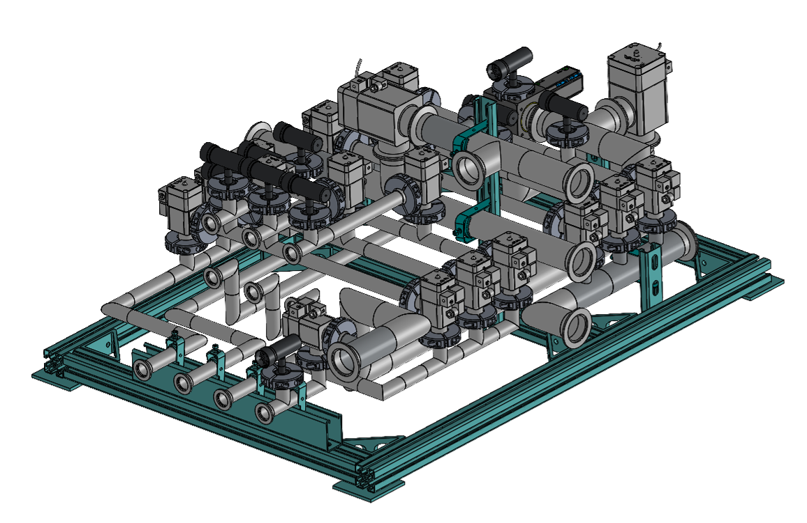
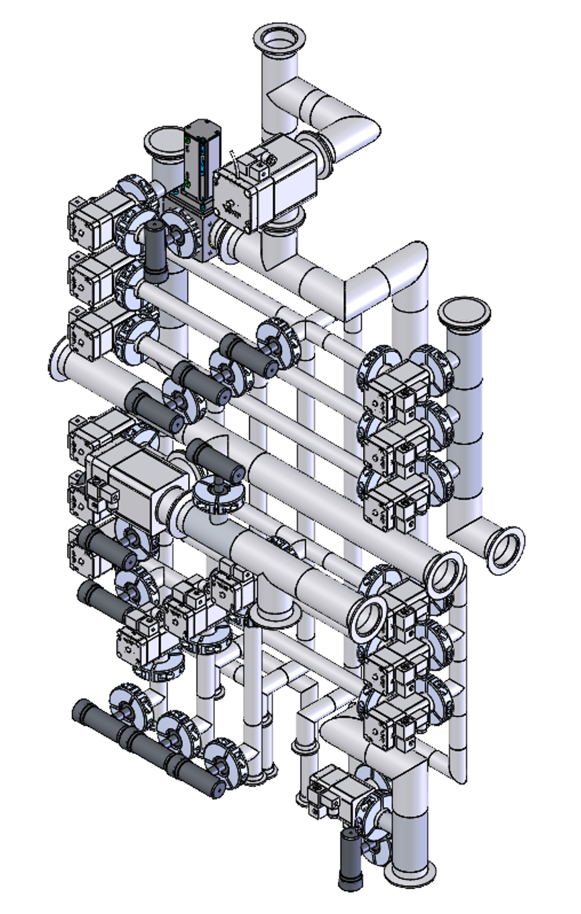
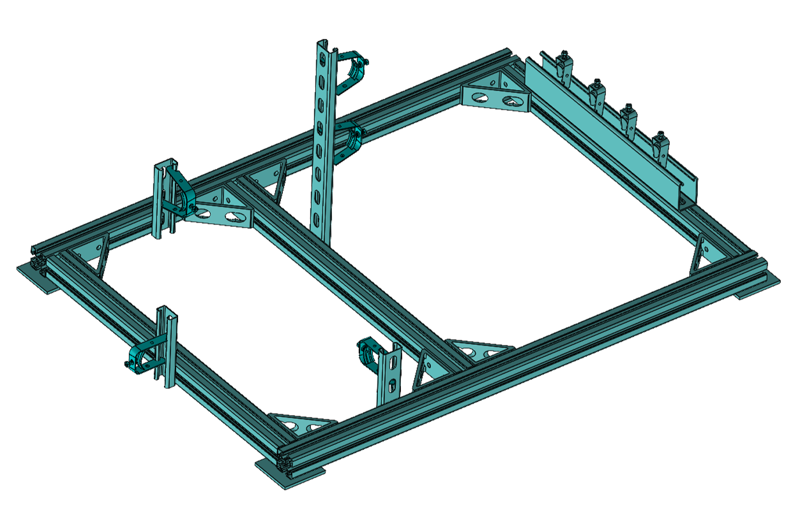

Project Overview
Designed a rectangular stainless-steel support structure for the ARIEL radioactive-gas pumping manifold, which routes radioactive exhaust gases safely into decay storage tanks. Owned the design end to end.

Design Requirements
Design for Radiation (DFR), minimal part count (DFM/DFA), and structural integrity under all loading conditions. Set quantitative structural targets consistent with ASME B31.3 practice for stainless-steel piping systems.

Structural Analysis & Iteration
Established boundary conditions by defining frame geometry and modeling concrete wall mounts as fixed supports. Simplified the manifold into pure bodies, imported the geometry into ANSYS, and applied point loads with self-weight under gravity. Ran a baseline simulation with minimal fixed clamps to identify high-stress regions. Iteratively found optimal clamp locations to minimize stress and deflection while using as few clamps as possible. Designed the exterior frame and aligned Unistrut channels to those positions, iterating member sizing through repeated FEA.


Outcomes
Cut peak displacement from 6.5 mm to ~1.1 mm and peak von Mises stress from 107 MPa to ~50 MPa through the optimized clamp layout. Delivered a rigid, wall-mounted rectangular frame with a minimal footprint and reduced part count suited to a radiation-exposed assembly. Issued complete GD&T manufacturing drawings that reduced fastener count and procurement complexity, streamlining assembly in the ARIEL Target Hall.
